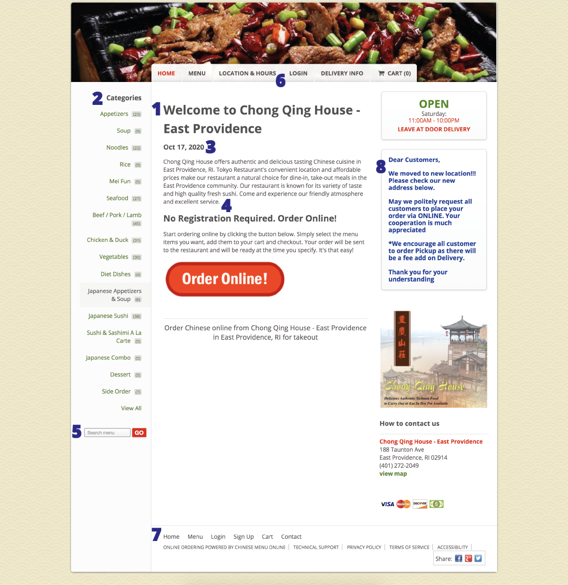
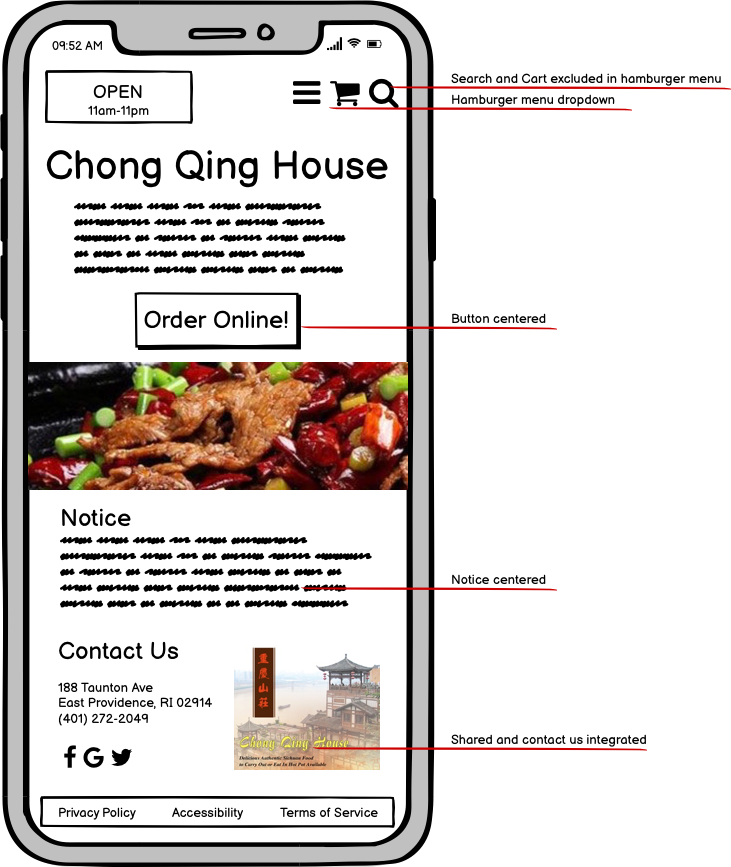
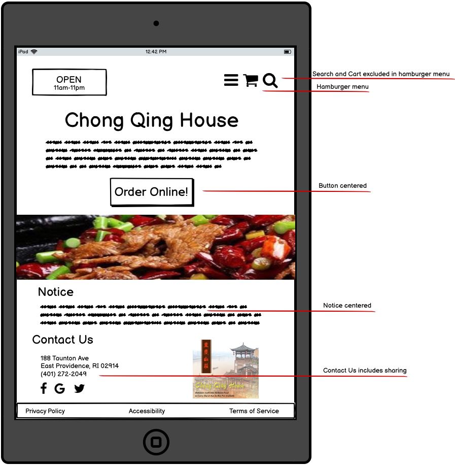
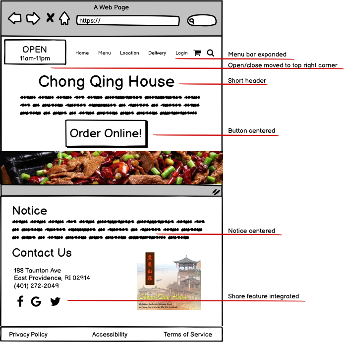
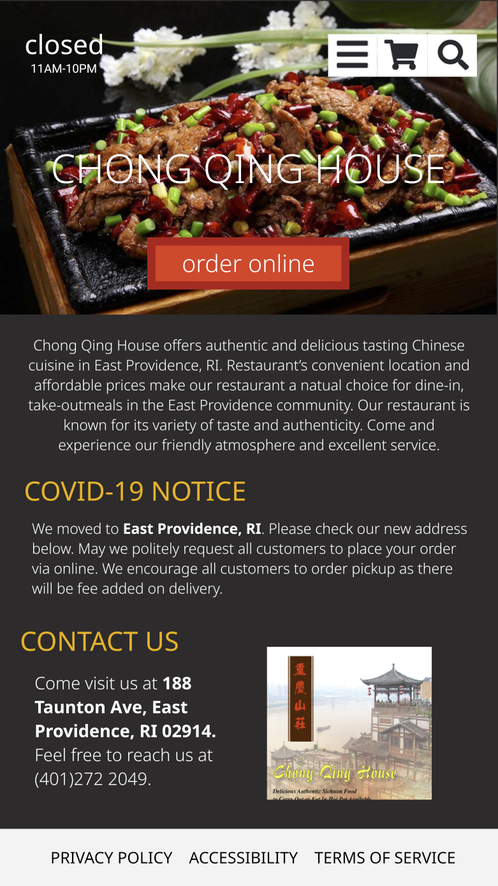
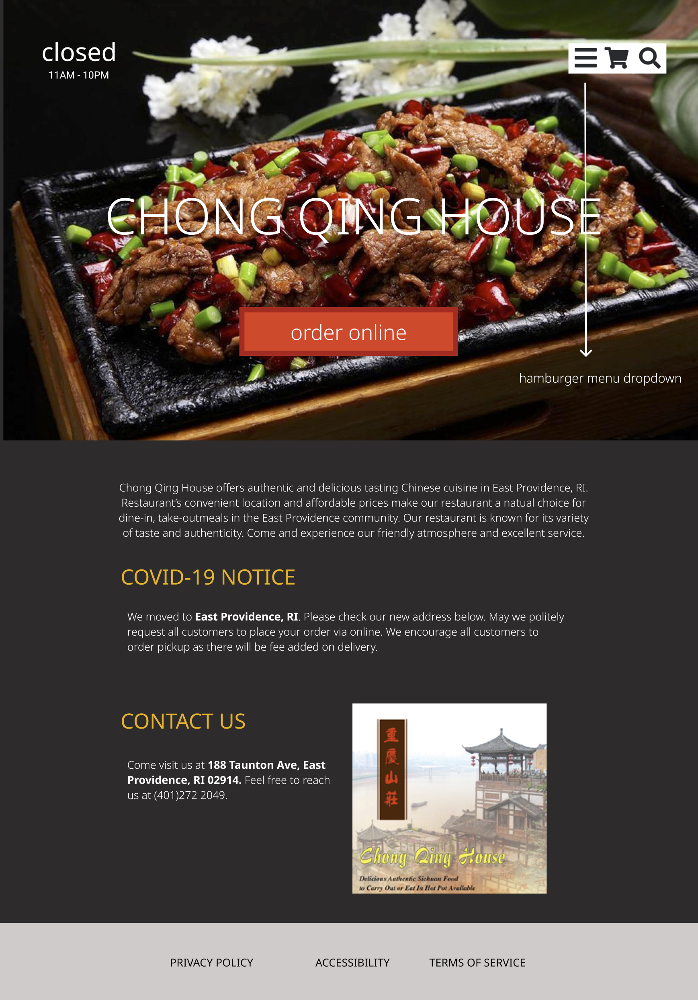
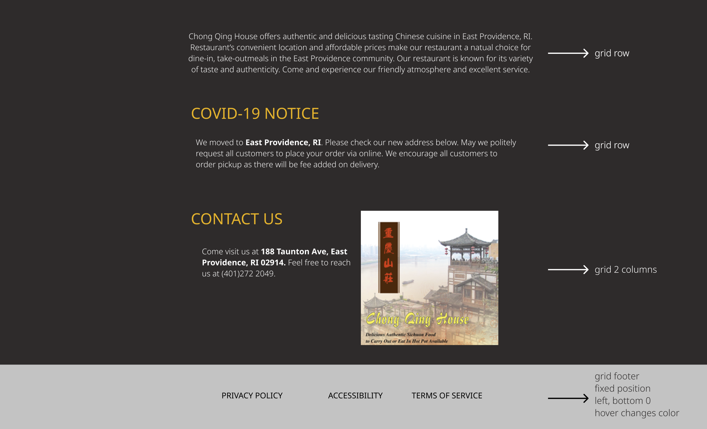
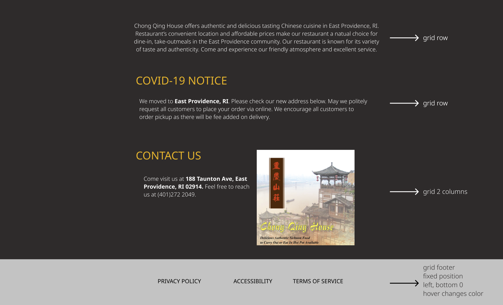
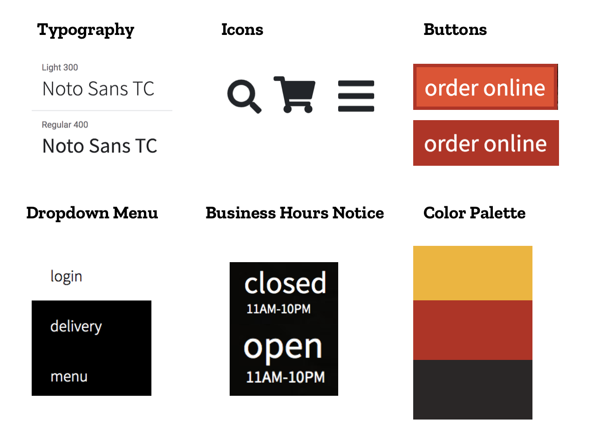

One of my favorite places to eat around Brown's campus is Chong Qing House. I've used their website amid the Covid outbreak and thought it would be meaningful to evaluate and redesign their online platform as their old customer.
Upon revisiting their website, I was able to pinpoint some usability issues that I've learned from class.
As shown in the WebAIM WAVE analysis, the website accounts for most accessibility issues and uses proper navigation and elements to structure the page. This allows the screen reader to read the contents of the webpage from top to bottom in coherent order. There are a couple of alerts as shown in the evaluation tool such as redundant links, redundant title texts, and small text sizes.
Combining all the problems I've identified above, I put together a low-fidelity wireframe of its main home page in three different layouts using Balsamiq.
I. Mobile
II. Tablet
III. Desktop
Afterwards, utilizing the wireframes as a guide, I put together a high-fidelity prototype via Figma.
I. Mobile
II. Tablet
III. Desktop
 

Here's a visual representation of all the interactive components in the website:
The redesigned version of the website is responsive in the following ways:
After testing the website on various accessibility and responsive tools, I learned that it is important to be careful and deliberate with html tags and their labels. Nowadays, people access websites using various devices, thus it was very meaningful to experiment different sizes and layout to ensure that the website is accessibly across all dimensions.